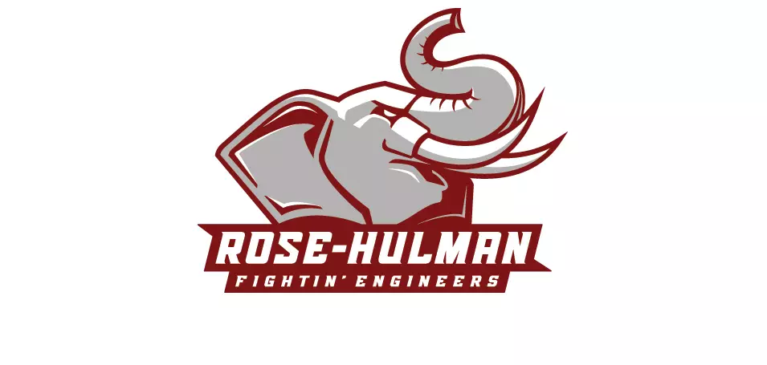

My Resume
Technologies I Know
- HTML
- JavaScript
- Java
- Python
- CSS
- Flask
- C
- VHDL
My Work Experience
-
Collins Aerospace
2024
- Developed a script to lint the entire Hardware Definition Language (HDL) codebase and standardize the project, resulting in the identification of over five thousand linting issues.
- Implemented program-driven FPGA requirement updates in an iterative development style.
- Analyzed and corrected integration-driven Register Transfer Language (RTL) snags using hardware and an object oriented Python scripting environment.
- Wrote and updated iteration-driven requirements to the DO-254 DAL-A standard.
- Developed DO-254 DAL-A compliant HDL code.
-
Jabil Inc.
2023
- Developed a library to use DMTF Redfish for server hardware validation.
- Developed automated testing environment for the script, unit, and feature testing.
- Programmed automated packaging for distribution across Linux and Red Hat operating systems.
- Led design reviews with cross-functional teams of up to ten people.
- Implemented Agile development practices with Azure DevOps and Git for source code control and review.
My Education

Bachelor of Science, Computer Engineering
Rose-Hulman Institute of Technology, Terre Haute, IN
Minors in Computer Science & Robotics
Graduating in May of 2025
GPA: 3.98